Задание №8
Производная и первообразная
Физический и геометрический смысл производной, исследование функций и вычисление площадей с помощью первообразной. Погнали! 📈

📖 Теория
1. Физический смысл производной
Если тело движется по закону \(x(t)\), то:
📝 Разбор примера
Условие: Материальная точка движется прямолинейно по закону \(x(t) = \frac{1}{3}t^3 - 5t^2 - 4t - 7\) (где \(x\) — расстояние в метрах, \(t\) — время в секундах).
а) Найдите её скорость в момент времени \(t = 12\) с.
б) В какой момент времени её скорость была равна 71 м/с?
Скорость — это производная пути: \(v(t) = x'(t)\).
Подставляем \(t = 12\) в формулу скорости:
Ответ а): 20
Приравниваем скорость к 71:
\(t^2 - 10t - 75 = 0\)
По теореме Виета или через дискриминант находим корни:
Так как время не может быть отрицательным, остаётся только \(t = 15\).
Ответ б): 15
2. Геометрический смысл (касательная)
Производная в точке равна угловому коэффициенту касательной (тангенсу угла наклона):
Как найти по графику?
Строй прямоугольный треугольник на касательной. Коэффициент \(k\) равен отношению противолежащего катета к прилежащему:
Знак производной (наклон)
- Если касательная возрастает (идет вверх слева направо), то \(f'(x_0) > 0\) (коэффициент положительный).
- Если касательная убывает (идет вниз слева направо), то \(f'(x_0) < 0\) (коэффициент отрицательный).
3. Исследование функции по производной
Чтобы понять, как ведет себя график, посмотри на знак производной в этой точке. Вот простая шпаргалка:
Как запомнить: Если график производной пересекает ось \(x\) сверху вниз (с \(+\) на \(−\)) — это максимум (горка). Если снизу вверх (с \(−\) на \(+\)) — это минимум (ямка).
4. Первообразная и площадь
Первообразная \(F(x)\) — это функция, производная которой равна \(f(x)\). То есть \(F'(x) = f(x)\).
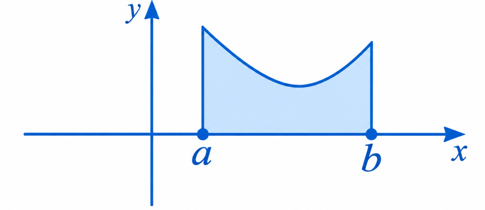
Формула Ньютона-Лейбница: Площадь фигуры под графиком функции \(f(x)\) на отрезке \([a; b]\) равна разности значений первообразной:
💡 Как решать задачи на ЕГЭ
1. Если дан график функции (неровная фигура) и точки:
Не нужно ничего интегрировать! В задаче уже дана формула первообразной \(F(x)\) и точки \(a\) и \(b\). Просто подставь эти точки в формулу и вычти: \(F(b) - F(a)\).
2. Если дана фигура (чаще всего трапеция):
Здесь тоже не нужна первообразная. Просто вспомни геометрию и посчитай площадь этой фигуры по клеточкам или формулам (например, площадь трапеции). Ответ и будет разностью \(F(b) - F(a)\).
🏎️ Физический смысл производной
Задача 1
Материальная точка движется прямолинейно по закону \(x(t) = \frac{1}{3}t^2 - 2t + 44\) (где \(x\) — расстояние в метрах, \(t\) — время в секундах). Найдите её скорость (в м/с) в момент времени \(t = 6\) с.
Задача 2
Материальная точка движется прямолинейно по закону \(x(t) = \frac{1}{6}t^3 + t^2 - 8t + 180\). В какой момент времени (в секундах) её скорость была равна 40 м/с?
Задача 3
Материальная точка движется прямолинейно по закону \(x(t) = \frac{1}{6}t^3 - 2t^2 + 6t + 250\). В какой момент времени (в секундах) её скорость была равна 96 м/с?
📐 Геометрический смысл (касательная)
Задача 4
На рисунке изображены график функции \(y = f(x)\) и касательная к нему в точке с абсциссой \(x_0\). Найдите значение производной функции \(f(x)\) в точке \(x_0\).
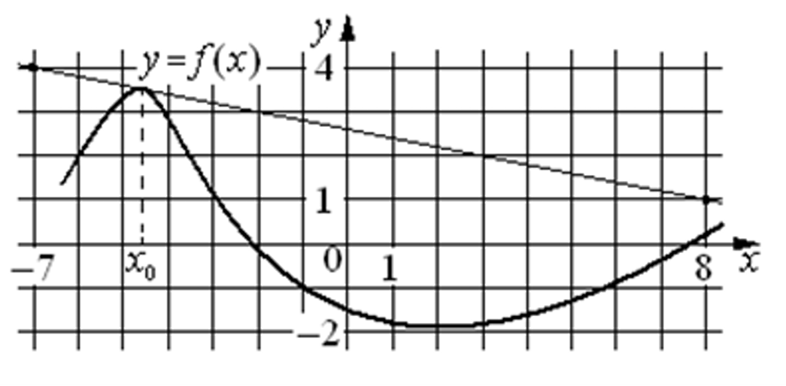
Задача 5
На рисунке изображены график функции \(y = f(x)\) и касательная к нему в точке с абсциссой \(x_0\). Найдите значение производной функции \(f(x)\) в точке \(x_0\).
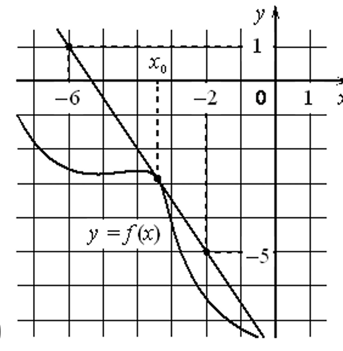
Задача 6
На рисунке изображены график функции \(y = f(x)\) и касательная к нему в точке с абсциссой \(x_0\). Найдите значение производной функции \(f(x)\) в точке \(x_0\).
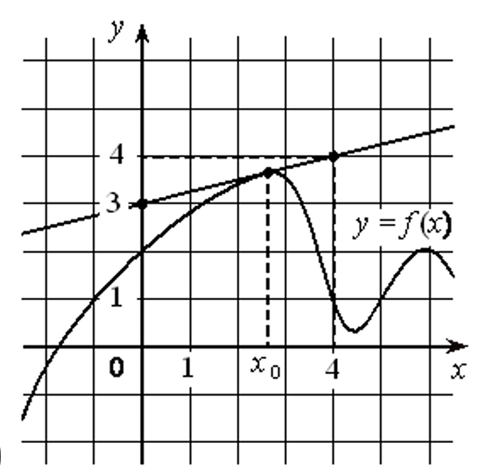
Задача 7
На рисунке изображены график функции \(y = f(x)\) и касательная к нему в точке с абсциссой \(x_0\). Найдите значение производной функции \(f(x)\) в точке \(x_0\).
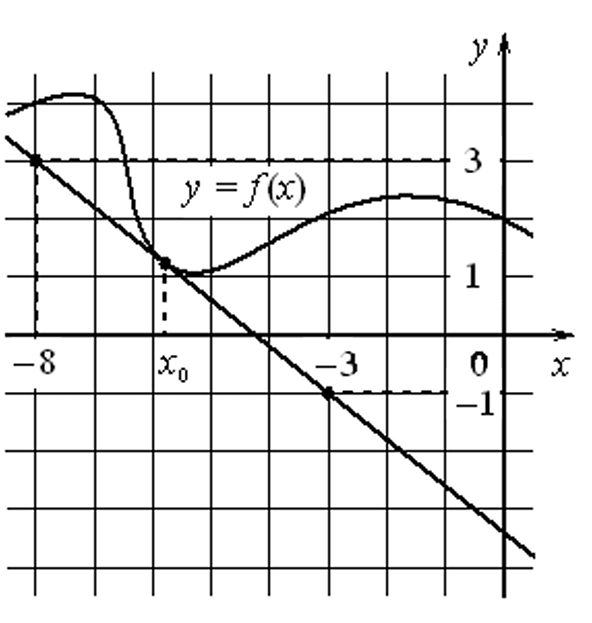
Задача 8
На рисунке изображены график функции \(y = f(x)\) и касательная к нему в точке с абсциссой \(x_0\). Найдите значение производной функции \(f(x)\) в точке \(x_0\).
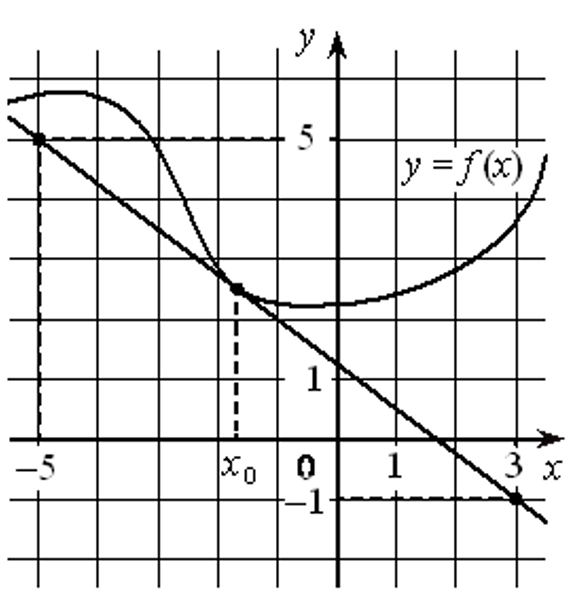
Задача 9
На рисунке изображены график функции \(y = f(x)\) и касательная к нему в точке с абсциссой \(x_0\). Найдите значение производной функции \(f(x)\) в точке \(x_0\).
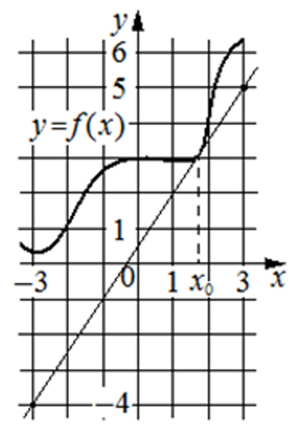
Задача 10
На рисунке изображены график функции \(y = f(x)\) и касательная к нему в точке с абсциссой \(x_0\). Найдите значение производной функции \(f(x)\) в точке \(x_0\).
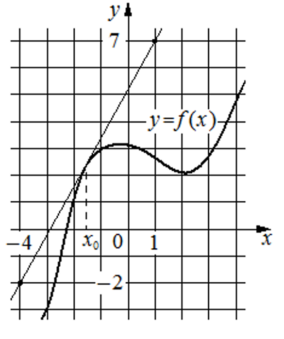
✍️ Касательная и параметры
Задача 11
Прямая \(y = -3x - 5\) является касательной к графику функции \(f(x) = x^2 + 7x + c\). Найдите \(c\).
📈 Применение производной (графики)
Задача 12
На рисунке изображён график \(y = f'(x)\) — производной функции \(f(x)\), определённой на интервале \((-2; 11)\). Найдите абсциссу точки, в которой касательная к графику функции \(y = f(x)\) параллельна оси абсцисс или совпадает с ней.
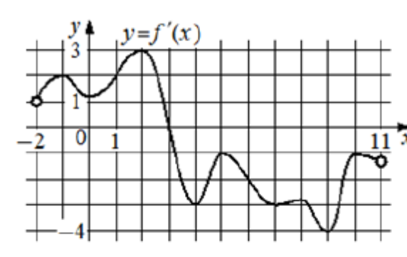
Задача 13
На рисунке изображён график \(y = f'(x)\) — производной функции \(f(x)\), определённой на интервале \((-4; 13)\). Найдите количество точек, в которых касательная к графику функции \(y = f(x)\) параллельна прямой \(y = 14\) или совпадает с ней.
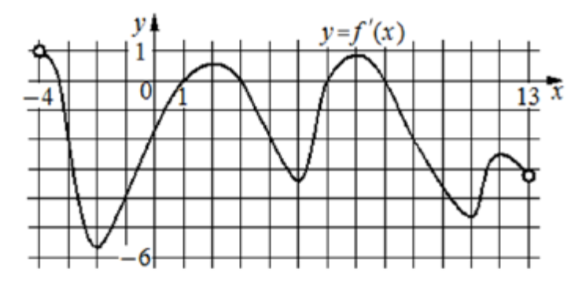
Задача 14
На рисунке изображён график \(y = f'(x)\) — производной функции \(f(x)\), определённой на интервале \((-4; 13)\). Найдите количество точек, в которых касательная к графику функции \(y = f(x)\) параллельна прямой \(y = -2x - 10\) или совпадает с ней.
Задача 15
На рисунке изображён график функции \(y = f(x)\). На оси абсцисс отмечены точки \(-2, -1, 3, 4\). В какой из этих точек значение производной наименьшее? В ответе укажите эту точку.
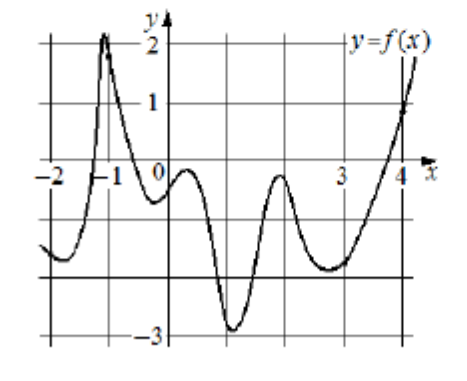
Задача 16
На рисунке изображён график функции \(y = f(x)\). На оси абсцисс отмечены точки 1, 2, 3, 4. В какой из этих точек значение производной наименьшее? В ответе укажите эту точку.
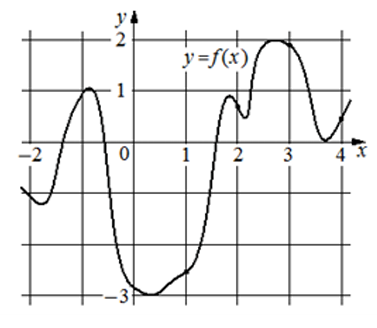
Задача 17
На рисунке изображён график функции \(y = f(x)\). На оси абсцисс отмечены \(n\) точек: \(x = \{x_1, x_2, x_3, ..., x_n\}\). Найдите количество отмеченных точек, в которых производная функции \(f(x)\) положительна.
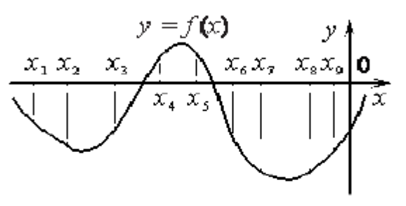
Задача 18
На рисунке изображён график функции \(y = f(x)\). На оси абсцисс отмечены \(n\) точек: \(x = \{x_1, x_2, x_3, ..., x_n\}\). Найдите количество отмеченных точек, в которых производная функции \(f(x)\) положительна.
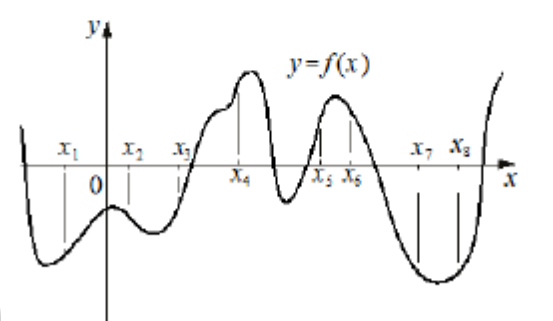
Задача 19
На рисунке изображён график функции \(y = f(x)\). На оси абсцисс отмечены \(n\) точек: \(x = \{x_1, x_2, x_3, ..., x_n\}\). Найдите количество отмеченных точек, в которых производная функции \(f(x)\) положительна.
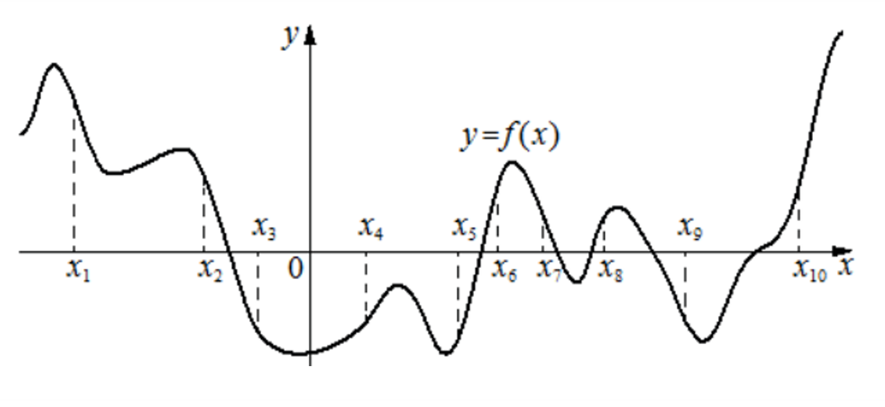
Задача 20
На рисунке изображён график функции \(y = f(x)\). На оси абсцисс отмечены \(n\) точек: \(x = \{x_1, x_2, x_3, ..., x_n\}\). Найдите количество отмеченных точек, в которых производная функции \(f(x)\) отрицательна.
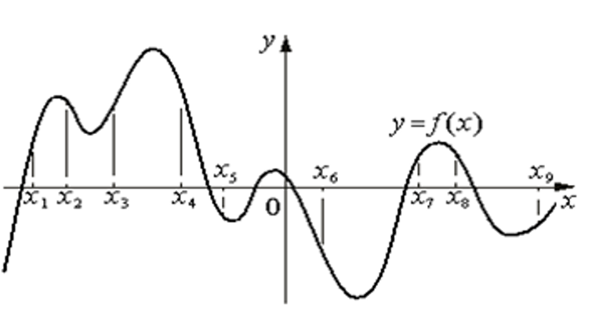
Задача 21
На рисунке изображён график функции \(y = f(x)\). На оси абсцисс отмечены \(n\) точек: \(x = \{x_1, x_2, x_3, ..., x_n\}\). Найдите количество отмеченных точек, в которых производная функции \(f(x)\) отрицательна.
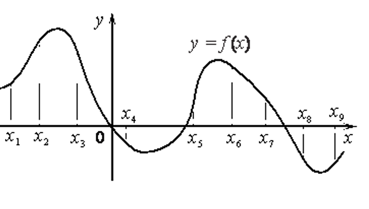
Задача 22
На рисунке изображён график функции \(y = f(x)\). На оси абсцисс отмечены \(n\) точек: \(x = \{x_1, x_2, x_3, ..., x_n\}\). Найдите количество отмеченных точек, в которых производная функции \(f(x)\) положительна.
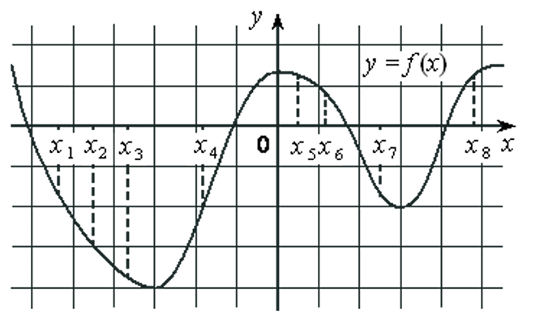
Задача 23
На рисунке изображён график функции \(y = f(x)\). На оси абсцисс отмечены \(n\) точек: \(x = \{x_1, x_2, x_3, ..., x_n\}\). Найдите количество отмеченных точек, в которых производная функции \(f(x)\) положительна.
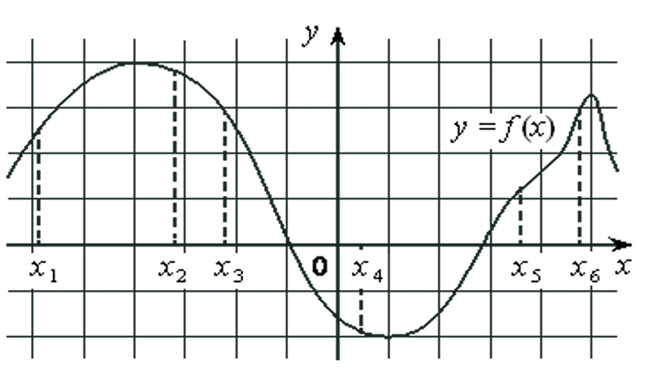
Задача 24
На рисунке изображён график функции \(y = f(x)\). На оси абсцисс отмечены \(n\) точек: \(x = \{x_1, x_2, x_3, ..., x_n\}\). Найдите количество отмеченных точек, в которых производная функции \(f(x)\) отрицательна.
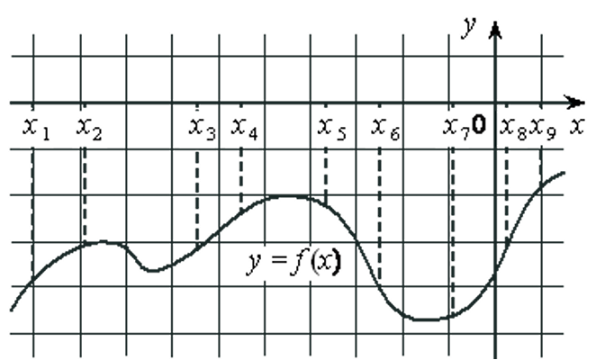
Задача 25
На рисунке изображён график функции \(y = f(x)\). На оси абсцисс отмечены \(n\) точек: \(x = \{x_1, x_2, x_3, ..., x_n\}\). Найдите количество отмеченных точек, в которых производная функции \(f(x)\) отрицательна.
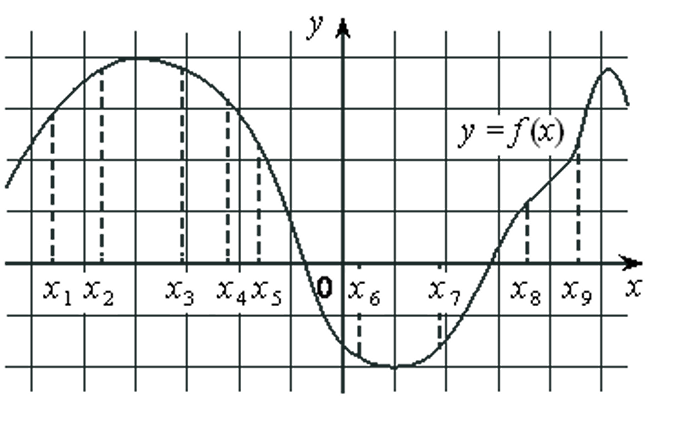
Задача 26
На рисунке изображён график функции \(y = f(x)\), определённой на интервале \((-7; 7)\). Определите количество целых точек, в которых производная функции положительна.
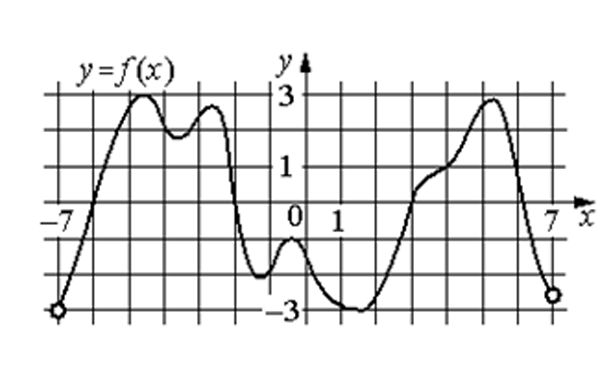
Задача 27
На рисунке изображён график функции \(y = f(x)\), определённой на интервале \((-6; 5)\). Определите количество целых точек, в которых производная функции отрицательна.
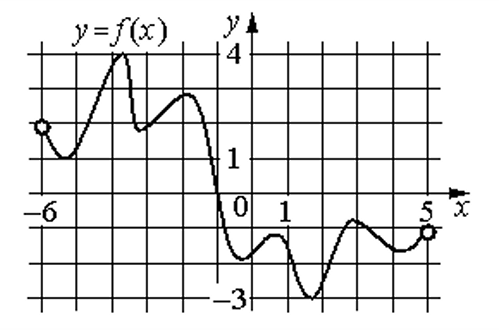
Задача 28
На рисунке изображён график функции \(y = f(x)\), определённой на интервале \((a; b)\). Найдите количество точек, в которых производная функции \(f(x)\) равна 0.
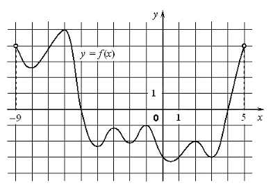
Задача 29
На рисунке изображён график функции \(y = f(x)\), определённой на интервале \((a; b)\). Найдите количество точек, в которых производная функции \(f(x)\) равна 0.
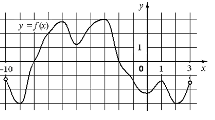
Задача 30
На рисунке изображён график функции \(y = f(x)\), определённой на интервале \((a; b)\). Найдите количество точек, в которых производная функции \(f(x)\) равна 0.
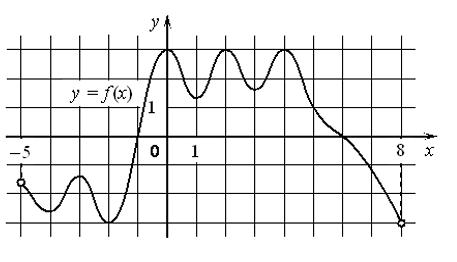
Задача 31
На рисунке изображён график функции \(y = f(x)\), определённой на интервале \((2; 6)\). Найдите корень уравнения \(f'(x) = 0\).
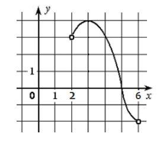
Задача 32
На рисунке изображён график функции \(y = f(x)\), определённой на интервале \((2; 13)\). Найдите точку из отрезка \([7; 12]\), в которой производная функции \(f(x)\) равна 0.
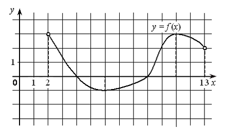
Задача 33
На рисунке изображён график функции \(y = f(x)\), определённой на интервале \((-5; 5)\). Найдите точку из отрезка \([-2; 4]\), в которой производная функции \(f(x)\) равна 0.
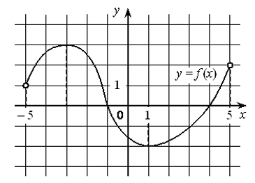
Задача 34
На рисунке изображён график функции \(y = f(x)\), определённой на интервале \((-10; 3)\). Найдите количество корней уравнения \(f'(x) = 0\), принадлежащих отрезку \([-7; 2]\).
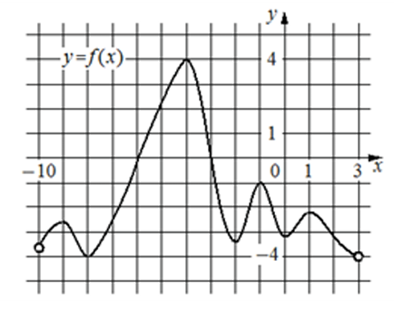
Задача 35
На рисунке изображён график \(y = f'(x)\) — производной функции \(f(x)\). На оси абсцисс отмечены \(n\) точек: \(x = \{x_1, x_2, ..., x_n\}\). Сколько из этих точек принадлежит промежуткам возрастания функции \(f(x)\)?
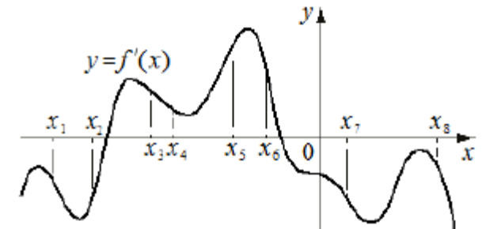
Задача 36
На рисунке изображён график \(y = f'(x)\) — производной функции \(f(x)\). На оси абсцисс отмечены \(n\) точек: \(x = \{x_1, x_2, ..., x_n\}\). Сколько из этих точек принадлежит промежуткам возрастания функции \(f(x)\)?
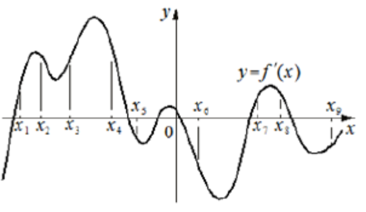
Задача 37
На рисунке изображён график \(y = f'(x)\) — производной функции \(f(x)\). На оси абсцисс отмечены \(n\) точек: \(x = \{x_1, x_2, ..., x_n\}\). Сколько из этих точек принадлежит промежуткам убывания функции \(f(x)\)?
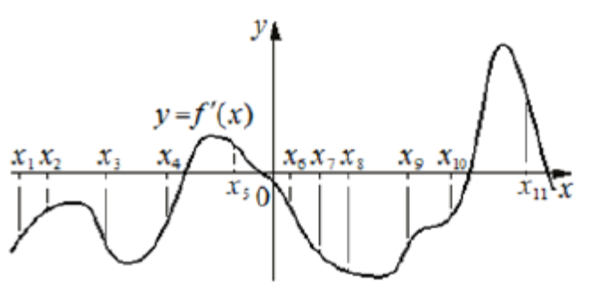
Задача 38
На рисунке изображён график \(y = f'(x)\) — производной функции \(f(x)\). На оси абсцисс отмечены \(n\) точек: \(x = \{x_1, x_2, ..., x_n\}\). Сколько из этих точек принадлежит промежуткам убывания функции \(f(x)\)?
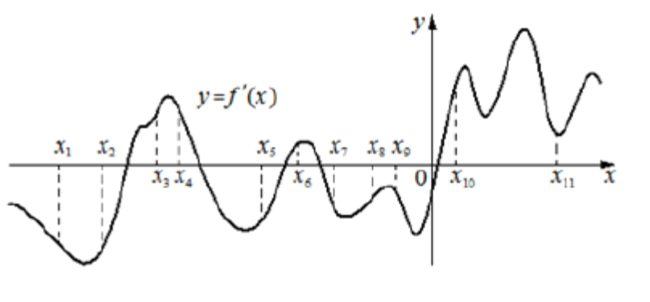
Задача 39
На рисунке изображён график функции \(y = f'(x)\) — производной функции \(f(x)\), определённой на интервале \((a; b)\). Найдите точку максимума функции \(f(x)\).
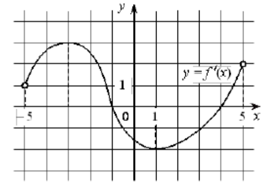
Задача 40
На рисунке изображён график функции \(y = f'(x)\) — производной функции \(f(x)\), определённой на интервале \((a; b)\). Найдите точку максимума функции \(f(x)\).
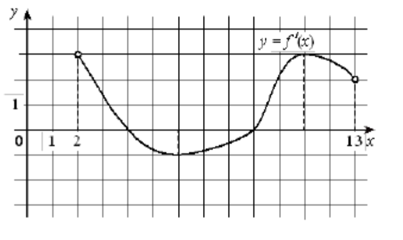
Задача 41
На рисунке изображён график \(y = f'(x)\) — производной функции \(f(x)\), определённой на интервале \((-3; 19)\). Найдите количество точек максимума функции \(f(x)\), принадлежащих отрезку \([-2; 15]\).
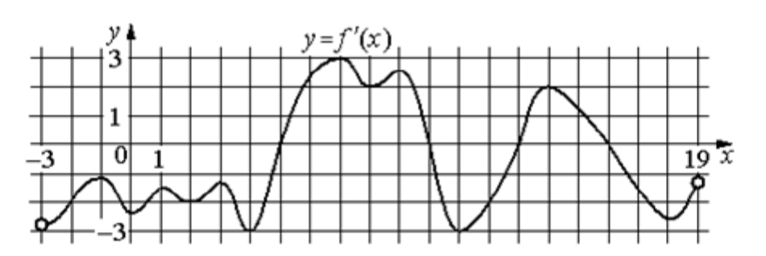
Задача 42
На рисунке изображён график \(y = f'(x)\) — производной функции \(f(x)\), определённой на интервале \((-2; 21)\). Найдите количество точек максимума функции \(f(x)\), принадлежащих отрезку \([-1; 16]\).
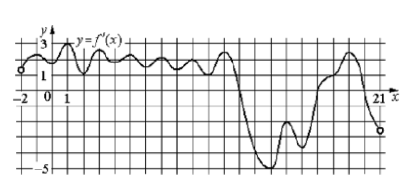
Задача 43
На рисунке изображён график функции \(y = f'(x)\) — производной функции \(f(x)\), определённой на интервале \((a; b)\). Найдите точку минимума функции \(f(x)\).
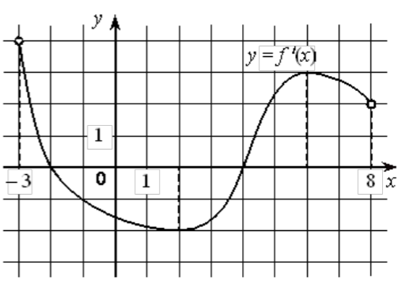
Задача 44
На рисунке изображён график функции \(y = f'(x)\) — производной функции \(f(x)\), определённой на интервале \((a; b)\). Найдите точку минимума функции \(f(x)\).
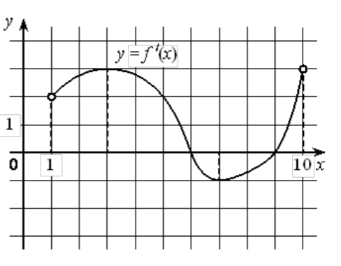
Задача 45
На рисунке изображён график \(y = f'(x)\) — производной функции \(f(x)\), определённой на интервале \((-19; 4)\). Найдите количество точек минимума функции \(f(x)\), принадлежащих отрезку \([-18; 3]\).
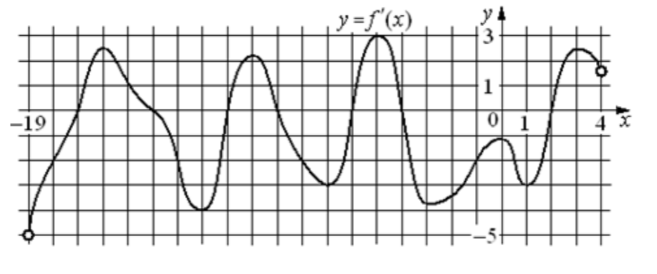
Задача 46
На рисунке изображён график \(y = f'(x)\) — производной функции \(f(x)\), определённой на интервале \((-10; 7)\). Найдите количество точек минимума функции \(f(x)\), принадлежащих отрезку \([-2; 6]\).
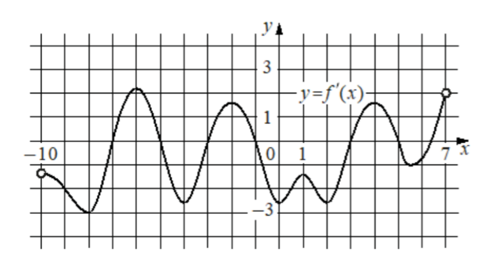
Задача 47
На рисунке изображён график \(y = f'(x)\) — производной функции \(f(x)\), определённой на интервале \((-9; 8)\). Найдите точку экстремума функции \(f(x)\), принадлежащую отрезку \([-3; 3]\).
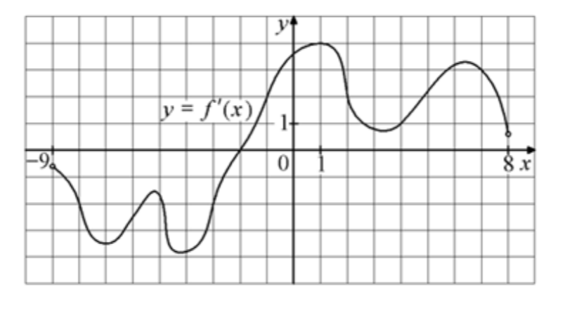
Задача 48
На рисунке изображён график \(y = f'(x)\) — производной функции \(f(x)\), определённой на интервале \((-20; 4)\). Найдите количество точек экстремума функции \(f(x)\), принадлежащих отрезку \([-16; 1]\).
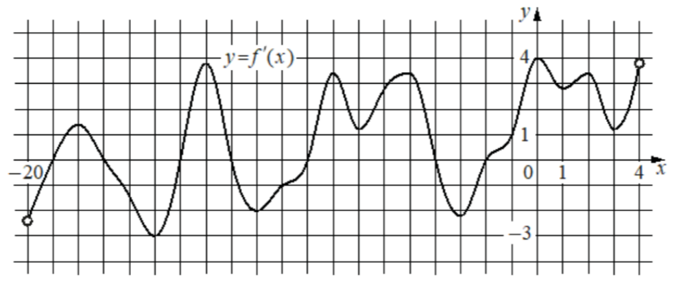
Задача 49
На рисунке изображён график \(y = f'(x)\) — производной функции \(f(x)\), определённой на интервале \((-9; 2)\). В какой точке отрезка \([-8; -4]\) функция \(f(x)\) принимает наибольшее значение?
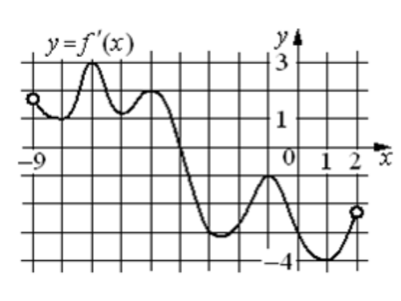
Задача 50
На рисунке изображён график \(y = f'(x)\) — производной функции \(f(x)\), определённой на интервале \((-5; 6)\). В какой точке отрезка \([-1; 3]\) функция \(f(x)\) принимает наибольшее значение?
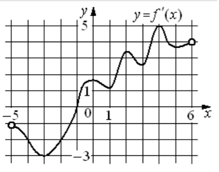
Задача 51
На рисунке изображён график \(y = f'(x)\) — производной функции \(f(x)\), определённой на интервале \((-3; 8)\). В какой точке отрезка \([-2; 3]\) функция \(f(x)\) принимает наименьшее значение?
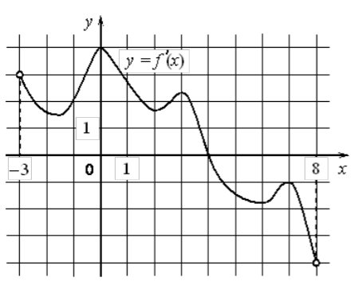
Задача 52
На рисунке изображён график \(y = f'(x)\) — производной функции \(f(x)\), определённой на интервале \((-3; 8)\). В какой точке отрезка \([-2; 3]\) функция \(f(x)\) принимает наименьшее значение?
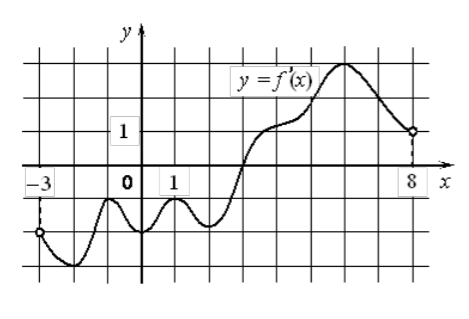
∫ Первообразная
Задача 53
На рисунке изображён график \(y = F(x)\) одной из первообразных некоторой функции \(f(x)\) и отмечены \(n\) точек на оси абсцисс: \(x = \{x_1, x_2, x_3, ..., x_n\}\). В скольких из этих точек функция \(f(x)\) положительна?
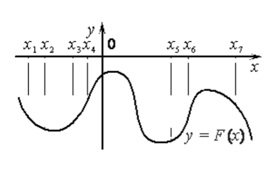
Задача 54
На рисунке изображён график \(y = F(x)\) одной из первообразных некоторой функции \(f(x)\) и отмечены \(n\) точек на оси абсцисс: \(x = \{x_1, x_2, x_3, ..., x_n\}\). В скольких из этих точек функция \(f(x)\) отрицательна?
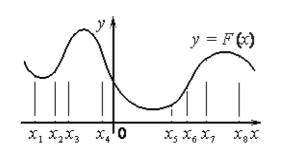
Задача 55
На рисунке изображён график \(y = F(x)\) одной из первообразных некоторой функции \(f(x)\), определённой на интервале \((-8; 7)\). Пользуясь рисунком, определите количество решений уравнения \(f(x) = 0\) на отрезке \([-5; 5]\).
Задача 56
На рисунке изображён график \(y = F(x)\) одной из первообразных некоторой функции \(f(x)\), определённой на интервале \((1; 13)\). Пользуясь рисунком, определите количество решений уравнения \(f(x) = 0\) на отрезке \([2; 11]\).
Задача 57
На рисунке изображён график некоторой функции \(y = f(x)\) (два луча с общей начальной точкой). Пользуясь рисунком, вычислите \(F(-1) - F(-9)\), где \(F(x)\) — одна из первообразных функции \(f(x)\).
Задача 58
На рисунке изображён график некоторой функции \(y = f(x)\). Функция \(F(x)\) — одна из первообразных функции \(f(x)\). Найдите площадь закрашенной фигуры.
Задача 59
На рисунке изображён график некоторой функции \(y = f(x)\). Функция \(F(x)\) — одна из первообразных функции \(f(x)\). Найдите площадь закрашенной фигуры.
Задача 60
На рисунке изображён график некоторой функции \(y = f(x)\). Функция \(F(x)\) — одна из первообразных функции \(f(x)\). Найдите площадь закрашенной фигуры.
Задача 61
На рисунке изображён график некоторой функции \(y = f(x)\). Функция \(F(x)\) — одна из первообразных функции \(f(x)\). Найдите площадь закрашенной фигуры.